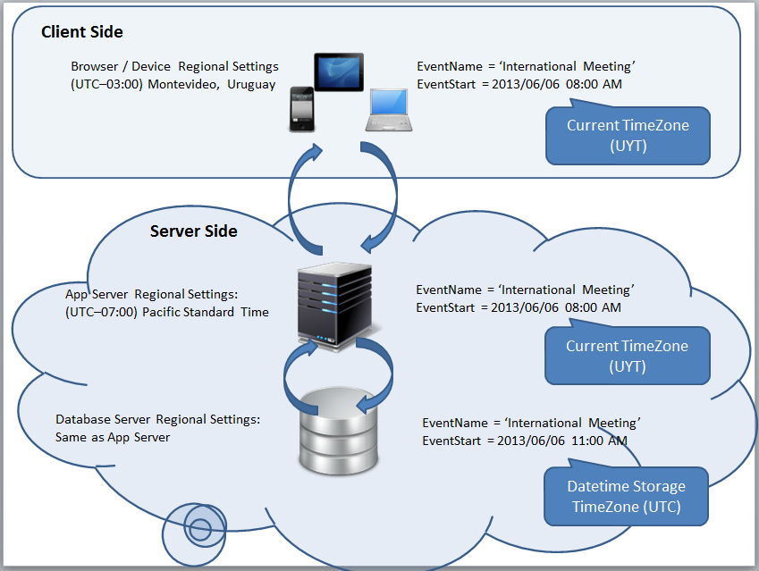

If TimeZone Support is enabled, DateTime fields entered by the user, DateTime constants and all operations performed on DateTime fields are made in the CTZ. A conversion to the value indicated in the DateTime storage timezone property (and to read inversely from that value) is performed only to save it in the database. ExampleAn event application such as EventDay (X Evolution 2) is considered. This application, which is accessed from all over the world, is installed on a server located in the Eastern United States (its Regional Options are configured for this region). DateTime storage timezone property is set to UTC; therefore, DateTime fields store all values in UTC. When a user accesses this application from Montevideo, he/she sees that a certain event starts on 6/6/2013 at 8 a.m. Knowing that the user is located in this region, the application converted DateTime values from UTC to UYT. If another user accesses it from a different region –for instance, Eastern United States (EST)- the time shown will be that of the region from where the user is connecting; in particular, the TZ indicated by the browser or the native Smart Device application being run. Both the browser and the native application obtain these data from the Regional Settings of the device / PC, etc. It should be pointed out that any operation performed on the application, such as a conversion to Character using TtoC function, is made in the CTZ. Therefore, if msg((TTOC(EventDateTime))) was programmed, the result would also be displayed in the CTZ.  See also
|
| Backlinks | |
| Toc:TimeZone Support | TimeZone Support - General Considerations |